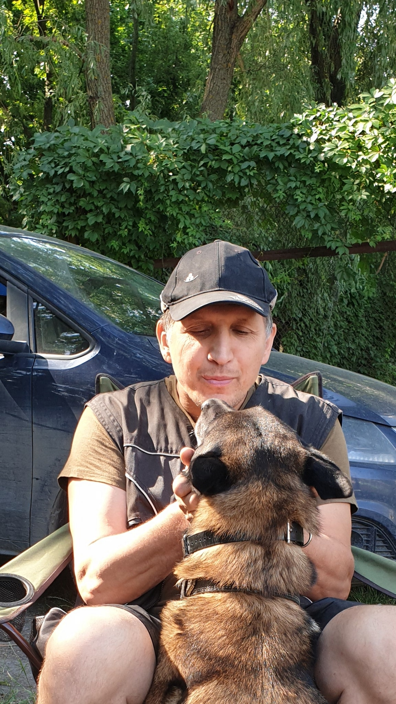
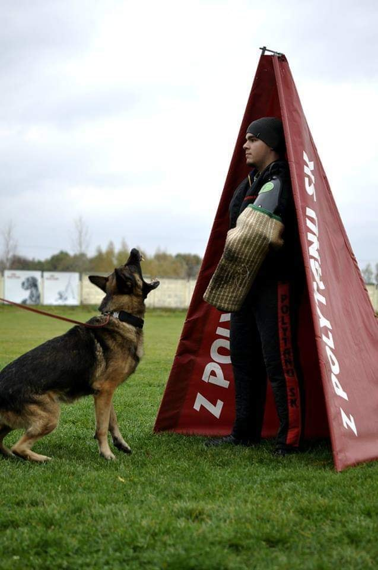

Амуниция для собаки - как одежда для Вас.Она должна быть удобной, практичной, надежной, красивой и при этом - доступной.Позвольте нам одеть Вашу собаку так, чтобы выделяться в толпе не кричащей безвкусицей ширпотреба, но элегантной красотой, удобством и проверенной временем надежностью классики.Не покупайте дорогое, покупайте лучшее!

Тренировки

Групповые тренировки
Команда кинологического клуба проводит групповую дрессировку собак. Программа включает общий курс дрессировки, помогает животному социально адаптироваться в среде
Узнать больше...Групповые тренировки
Команда кинологического клуба проводит групповую дрессировку собак. Программа включает общий курс дрессировки, помогает животному социально адаптироваться в среде сородичей, а также выгодна хозяину — групповые занятия стоят дешевле индивидуальных. Многие хозяева занимаются со своей собакой самостоятельно, учат ее выполнять простейшие команды. Однако в какой-то момент выясняется, что этих тренировок явно недостаточно, чтобы собака приобрела все необходимые в повседневной жизни навыки. Хорошим вариантом в этом случае станут групповые занятия. Мы предлагаем вам площадку, на которой групповую дрессировку собак проводят настоящие профессионалы.

Индивидуальные тренировки
Команда кинологического клуба проводит индивидуальную дрессировку собак. Опытный кинолог разработает специальную программу для каждой собаки
Узнать больше...Индивидуальные тренировки
Команда кинологического клуба проводит индивидуальную дрессировку собак. Опытный кинолог разработает специальную программу с учетом особенностей личности, возраста и породы собаки, а также целей, которые ставит перед ней хозяин — например, адекватное поведение в городской среде или функции телохранителя.Различные породы собак по-разному реагируют на воспитание и обучение социальным навыкам. Вот почему во многих случаях требуется индивидуальная программа. Кинологи нашего клуба помогут вам выбрать команды для отработки, необходимые именно вашему питомцу.

Спортивные тренировки
Специалисты кинологического клуба предлагают дрессировку собак на защиту. Пройдя курс в нашем клубе, ваш пес сможет открыть в себе новые качества
Узнать больше...Спортивные тренировки
Специалисты кинологического клуба предлагают дрессировку собак на защиту. Пройдя курс в нашем клубе, ваш пес сможет открыть в себе новые качества и станет истинным помощником в охране не только жизни хозяина, но и его имущества.Самостоятельная дрессировка собаки для защиты хозяина слишком сложна для неподготовленного владельца пса. Необходимо знать особенности темперамента животного, его возможности, уметь раскрыть потенциал. Потому лучше доверить процесс в руки специалистов. После прохождения подготовки вам будет не страшно отправиться на улицу – в сложной ситуации четвероногий друг сможет постоять за вас.